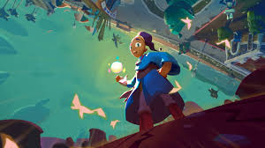

Communément abrégé LBA est un jeu vidéo développé par le studio français Adeline Software International, sorti en 1994 sur MS-DOS puis en 1997 sur playstation .
A partir de 2011 le jeu a été rendu compatible avec les versions modernes de Windows et Mac OS par GOG.com. Le jeu connaît en 2014 un portage accompagné de nouvelles fonctionnalités : cette adaptation est réalisée par DotEmu pour appareils mobiles (Android et iOS) puis pour Windows. En 2022, le jeu est renommé Twinsen's Little Big Adventure Classic par le studio « 2.21 » ayant acquis la propriété intellectuelle du jeu.
Le jeu se déroule sur une planète imaginaire nommée Twinsun. Le joueur dirige le héros de l'aventure, nommé Twinsen. La planète est gouvernée par un dictateur, le docteur FunFrock, contre qui Twinsen décide de se rebeller.
Little Big Adventure est généralement considéré comme un jeu d'action-aventure, mêlant à la fois un scénario dense, typique du jeu d'aventure, et la gestion d'une barre de vie, typique du jeu d'action. Le système de jeu intègre également des éléments issus du jeu de plates-formes et du jeu de tir à la troisième personne.
Le jeu a reçu des critiques très favorables à sa sortie et s'est rapidement imposé comme un jeu culte ayant marqué le courant de la French touch. Cet accueil favorable a donné lieu à la réalisation d'une suite, Little Big Adventure 2, sortie en 1997.
Un remake est également en préparation et sortira pour le mois de novembre, la page du jeux est accecible en cliquant sur l'image.
